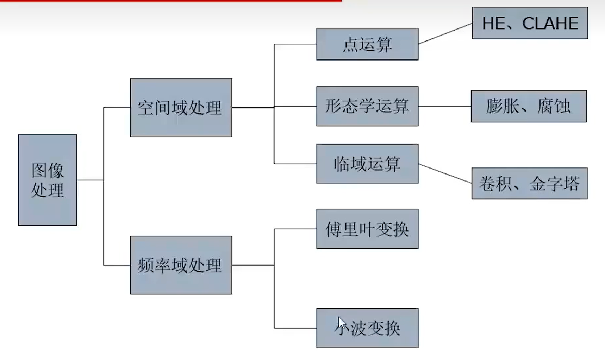
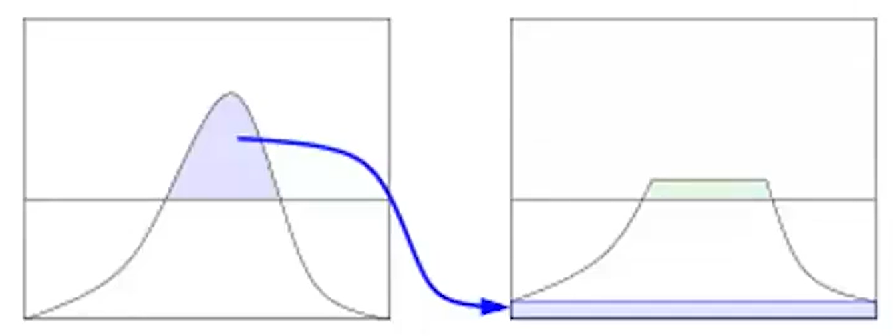

一、图像预处理(图像增强)
1.1 RGB转Gray
$Gray=R \times 0.3+G \times 0.59+B \times 0.11$
1.2 图像处理方法概述
1.3 均衡化
1.3.1 直方图均衡化
- 利用图像直方图对图像对比度进行调整的方法
- 通常用来增加图像的局部对比度，而不影响整体的对比度
- 实质是对图像进行非线性拉伸，重新分配各个像素单位中的像素点数量，是数量大致相等
- 解决图像太亮或太暗的方法
- 效果如下
1.3.2 自适应直方图均衡化(AHE算法)
- 图像中既有特别亮也有特别暗的部分
- 算法主要步骤
- 移动模板在原始图像上，按特定步长滑动
- 每次移动后，模板区域做直方图均衡化，映射后的结果赋值给模板区域所有点
- 每次模板滑动会覆盖相同的点，所有每个点会有不同的赋值，取其均值作为该点最终赋值
- 缺点：会过度放大图像中相对均匀区域的噪声
1.3.3 限制对比度自适应直方图均衡(CLAHE算法)
相较于AHE算法，有一个直方图修剪过程，修剪后其图像对比度会更加自然
- 
算法步骤
- 图像分块
- 先计算直方图，然后修剪直方图，最后均衡
- 遍历各个图像块，进行块间双线性插值
- 与原图做图层滤色混合操作（可选）
效果如下
1.4 形态学运算
当有噪声的图像用阈值二值化后，所得到的边界是很不平滑的，物体区域具有一些错判的孔洞，背景区域散步着一些小的噪声物体，连续的开闭运算可以显著改善这种情况
1.4.1 膨胀
- 对图像中高亮部分进行膨胀，类似于领域扩张
1.4.2 腐蚀
- 领域蚕食
1.4.3 开运算
- 先腐蚀再膨胀，去掉目标外的孤立点
1.4.4 闭运算
- 先膨胀再腐蚀，去掉目标内的孔洞
1.5 空间域处理(滤波/卷积)
1.5.1 平滑/去噪
1.5.1.1 均值滤波(很少用)
- 均值滤波本身存在缺陷，既没有很好的去除噪声点，也破坏了图像的细节，反而使图像变得模糊
- 效果如下
1.5.1.2 中值滤波
- 对区域内像素取中位数
- 对于椒盐噪声，可以较好的还原图像
- 效果如下
1.5.1.3 高斯滤波
- 模拟人眼，关注中心区域，离中心越远，感受到的精度越模糊
- 有效去除高斯噪声
- 参数
- x,y是卷积参数坐标
- $\delta$是标准差，$\delta$越小，关注区域越集中
1.5.1.4 高斯金字塔
- 高斯滤波的模糊化，是为了引入高斯金字塔
- 直接降采样损失信息，用高斯滤波来减少降采样带来的信息损失
1.5.2 梯度/锐化
1.5.2.1 Prettier
1.5.2.2 Sobel算子
- sobel滤波找竖直的线，也可以找水平的线，对于斜向的线易遗漏
1.5.2.3 Laplacian算子
- 找突变的地方
- 块图检测：周边高于/低于中心点
- 边缘检测：像素值快速变化的区域
- 算子和必须是0，要满足微分等式，避免把完全平滑的区域选出来
- 效果如下
二、特征检测
2.1 颜色特征
2.1.1 量化颜色直方图
- 适用空间：RGB、HSV
- 操作
- 颜色空间量化，单元由单元中心代表
- 统计落在量化单元上的像素数量
2.1.2 聚类颜色直方图
- 适用空间：LAB
- LAB空间是用数字化的方法来描述人的视觉感应
- L代表像素亮度，取值范围是[0,100]，表示从纯黑到纯白
- A代表从品红色到深绿色的范围，取值范围是[127,-128]
- B代表从黄色到蓝色的范围，取值范围是[127,-128]
- 操作
- 使用聚类算法对所有像素点颜色向量进行聚类
- 单元由聚类中心代表
2.2 几何特征
2.2.1 边缘特征
- 边缘（Edge）
- 像素明显变化的区域
- 具有丰富的语义
- 作用
- 物体识别
- 几何、视角交换
- 数学角度定义
- 像素值函数快速变化的区域$\rightarrow$一阶导数的极值区域
- 边缘提取
- 先高斯去噪（平滑图像），使像素变化连续，再使用一阶导数获得极值
- 导数对噪声敏感
2.2.2 基于特征点的特征描述子
从不同距离、不同方向、角度，不同的光照下观察同一个物体，物体的形状大小明暗都会有所不同，但我们依然可以判断它是同一个物体
理想的特征描述子应在大小、方向、明暗不同的图像中，同一特征点应具有足够相似的描述子
特征点
- 不同视角图片之间的映射
- 稳定局部特征点
- 可重复性、显著性
- 抗图片变换（亮度、光照、平移、选择、尺度）
- 找到这些关键点后，可实现图像拼接、运动跟踪、物体识别、机器人导航、3D重建
2.2.2.1 Harris角点
2.2.2.2FAST角点
FAST角点检测是一种快速角点特征检测算法
FAST角点定义：若某像素点与其周围领域内足够多的像素点处于不同区域，则该像素点可能为角点
FAST特征点检测是对兴趣点所在圆周上的16个像素点进行判断
FAST角点检测算法复杂度小，检测效果好
FAST不产生多尺度特征，没有方向信息，会失去旋转不变性
算法步骤
- 确定一个阈值t，观察检测像素点p为中心的一个半径等于3像素的离散化的圆，这个圆边界上有16个像素
- 如果在这个圆上，有连续12个像素点，它们的像素值要么都比$I_p+t$大/小，则点p是一个角点
三、图像分割
其目的是将感兴趣目标从复杂背景中提取出来，以便进行目标识别和分析
3.1 阈值分割
3.1.1 图像二值化
- 当背景与前景的灰度分布差异明显时，可以使用单个阈值处理图像
3.1.1.1 自动阈值算法
- 当物体与背景的直方图之间存在一个相当清晰的波谷时，这个算法工作效果很好
- 算法步骤
- (1) 为全局选定一个初始阈值T
- (2) 用初值T对图像进行分割，把图像分割为2组像素，$G_1$由灰度值大于T的像素组成，$G_2$由小于等于的像素组成
- (3) 对$G_1$和$G-2$分别计算平均灰度值$m_1$和$m_2$
- (4) 更新阈值$T=\frac{m_1+m_2}{2}$
- (5) 重复(2)-(4)，直到相邻2次T值之差小于预定的$\Delta T$为止
3.1.1.2 Otsu最佳阈值处理（最大类间差方法）
Otsu算法是一种自适应阈值确定方法，是一种全局的二值化方法
它根据图像的灰度特性，将图像分为前景和背景两个部分。当取最佳阈值时，两部分之间的差别最大。
Otsu算法采用的衡量差别的标准为最大类间方差。前景与背景之间的类间方差越大，就说明构成图像的两部分差别越大
当部分目标被错分为背景或部分背景被错分为目标时，都会导致两部分差别变小
当所取阈值的分割使类间方差最大时，意味着错分概率最小
算法过程
假设一幅尺寸为M*N的图像中有L个不同的灰度级{0,1,2,…,L-1}，$n_i$表示灰度级为i的像素个数，$p_i$表示归一化的直方图分量
- $p_i=\frac{n_i}{MN}，\sum\limits _{i=0}^{L-1} p_i=1$
选择一个阈值$T(k)=k (0<k<L-1)$，用它将图像阈值分为两类
- $C_1$灰度值在[0,k]
- $C_2$灰度值在[k+1,L-1]